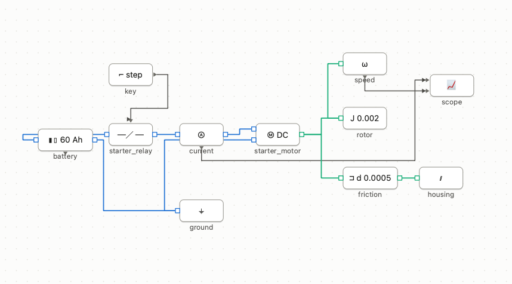

Physical modelling¶
Signal blocks compute an output from their inputs: information flows one way. Physical systems are not like that: in a circuit, the current through a resistor depends on everything else connected to it. Nervus models electrical circuits, rotating shafts and heat paths with physical blocks whose ports are joined by links, like Simscape. Kirchhoff's laws are assembled automatically.
| Domain | Across (at a port) | Through (in a component) | Library |
|---|---|---|---|
| electrical | voltage [V] | current [A] | Electrical: Resistor, Capacitor, Inductor, Voltage/Current Source, Switch, Diode, Battery, DC Motor, H-Bridge, sensors |
| rotational | angular velocity [rad/s] | torque [N·m] | Rotational: Inertia, Spring, Damper, Torque/Speed Source, Ideal Gear, sensors |
| thermal | temperature [°C] | heat flow [W] | Thermal: Thermal Mass, Thermal Resistance, Heat Source, Temperature Source, sensors |
| hydraulic | pressure [bar] | volume flow [L/min] | Hydraulic: Tank, Pump (Flow Source), Pressure Source, Orifice, Relief Valve, Volume, sensors |
Drawing circuits in the editor¶
Physical blocks are in the library under Electrical, Rotational and Thermal. Their physical ports are small squares on the left and right sides, in the colour of their domain (blue electrical, green rotational, orange thermal); signal inputs (a controlled source) are on the top and signal outputs (sensors) at the bottom. Drag from one square to another to link them: a link is a plain line without an arrow, because current can flow both ways. Several links on one port join at one node. Ports of different domains cannot be linked. Select a link and press Delete (or right-click → Delete Link) to remove it; deleting a block removes its links, and everything can be undone.

To put part of a circuit into a subsystem, add Connection Port blocks inside (Library → Ports & Subsystems): each one becomes a physical port along the bottom edge of the subsystem.
A first circuit¶
from nervus import Diagram, simulate
from nervus.blocks import Capacitor, ElectricalReference, Resistor, Scope, VoltageSensor, VoltageSource
d = Diagram("rc")
supply = d.add(VoltageSource(V=10.0), name="supply")
r = d.add(Resistor(R=1000.0), name="R")
c = d.add(Capacitor(C=1e-3), name="C")
gnd = d.add(ElectricalReference(), name="gnd")
vc = d.add(VoltageSensor(), name="vc")
d.link((supply, "p"), (r, "p")) # physical links: no direction
d.link((r, "n"), (c, "p"))
d.link((c, "n"), (gnd, "p"))
d.link((supply, "n"), (gnd, "p"))
d.link((vc, "p"), (c, "p"))
d.link((vc, "n"), (gnd, "p"))
d.connect(vc, d.add(Scope())) # a sensor's output is an ordinary signal
res = simulate(d, 3.0)
res["vc"] # 10 (1 - e^(-t/RC)), RC = 1 s
Every circuit needs an Electrical Reference (ground). Sensors turn physical quantities into signals; controlled sources (controlled = on) turn signals into voltages, currents, torques or heat flows. So a controller built from signal blocks can drive a physical plant: a PI controller that reads a Speed Sensor and sets a Voltage Source driving a DC Motor.
Automotive electrics¶
The Automotive Electrics library has components with their typical behaviour built in:
| Block | What it models |
|---|---|
| Solenoid | a coil (R, L) whose armature pulls in above a current and drops out below a lower one |
| Fuel Injector | a solenoid injector: the needle opens a little after the ECU switches it on (the opening delay); outputs lift and fuel flow |
| Relay | coil plus a contact that closes while the armature is pulled in |
| Glow Plug | a heater whose resistance rises with its temperature, so it limits its own current; thermal port to the cylinder head |
| Alternator | the regulated generator: holds 14.2 V up to a current limit that depends on its speed, and loads the engine with the electrical power divided by its efficiency |
The opening delay of an injector, for example, follows from its coil: the current rises as \(i(t) = \frac{V}{R}\left(1 - e^{-tR/L}\right)\), so a 12 Ω, 10 mH injector at 12 V reaches its 0.6 A pull-in current after \(-\frac{L}{R}\ln(1 - 0.6) = 0.76\) ms. With a weaker battery the delay grows; ECUs correct the injection time for the battery voltage for this reason.
Hydraulics¶
Pressure in bar (above the tank) and volume flow in L/min. A Hydraulic Volume (a fuel rail, a hose) stores fluid: \(\frac{V}{\beta}\frac{dp}{dt} = q\), with the bulk modulus β. An Orifice is a turbulent restriction, \(q \propto \sqrt{\Delta p}\), with a laminar region near zero so the equations stay smooth. A Relief Valve opens above its cracking pressure, like the pressure regulator of a fuel system: a pump feeding a rail with a 4 bar regulator and injectors settles just above 4 bar, with the excess returning to the tank.
Electronic circuits: semiconductors, like SPICE¶
The Semiconductors library has SPICE-like device models: Diode (Shockley equation, with reverse breakdown for Zener diodes; LEDs with their own Is and N), Bipolar Transistor (NPN/PNP, Ebers-Moll), MOSFET (N/P, SPICE level 1) and Op-Amp (high gain, output limited to its rails). The Ideal Diode in the Electrical library is a faster piecewise-linear switch.
These devices are nonlinear, so the network is solved the way SPICE does it: around the last solution each device is replaced by a conductance and a current source (its companion model), the linear system is solved, and this is repeated (Newton-Raphson) until the solution no longer changes. Junction voltages are limited between iterations (SPICE's pnjlim), so the exponentials converge from any starting point. For a diode:
Circuits with more than 80 unknowns are solved with sparse matrices, so circuits with hundreds of nodes stay fast. The voltage-controlled sources E and G of SPICE are the blocks Voltage-Controlled Voltage/Current Source.
Analyses¶
| SPICE | Nervus |
|---|---|
.tran (transient) |
an ordinary simulation (▶ Run, or simulate) |
.op (operating point) |
nervus.circuit.operating_point(model): every node voltage at the steady state |
.dc (DC sweep) |
nervus.circuit.dc_sweep(model, "Vin", "V", values, ["vout"]) |
.ac (small-signal) |
Linear Analysis: an In block on a controlled source, an Out block on a sensor → Bode plot |
from nervus.circuit import dc_sweep, operating_point
op = operating_point(model)
print(op.table()) # R1.n 0.6291, D1.p 0.6291, ...
curve = dc_sweep(model, "Vin", "V", np.linspace(0, 5, 51), ["vd"])
SPICE netlists (LTspice)¶
File → Import SPICE Netlist… opens a netlist as a model, and Export SPICE Netlist… writes one. In
LTspice, View → SPICE Netlist shows the netlist of a schematic; save it as a .cir file. Nervus reads
R, C, L, V, I (DC, SIN, PULSE), D, Q, M, E and G, .model, .param and .tran. Every node gets a Voltage
Sensor named like SPICE's probes, so res["V(out)"] is the voltage of node out:
* Half-wave rectifier with a smoothing capacitor
V1 in 0 SIN(0 10 50)
D1 in out D1N4007
C1 out 0 100u
R1 out 0 1k
.model D1N4007 D(IS=7n N=1.8 BV=1000 IBV=5u)
.tran 50u 100m
.end
from nervus.spice import read_netlist, write_netlist
d = read_netlist("rectifier.cir")
res = simulate(d) # V(out): about 9 V with 1.8 V of ripple
write_netlist(d, "back.cir")
The rise and fall times of PULSE sources are ignored (ideal edges), subcircuits (.subckt) and behavioural
sources (B) are not read yet; a list of elements that were left out is shown after the import.
How it is solved¶
Ports that are linked share a node. At every node the through values add up to zero (Kirchhoff's current law), and every component relates the across values of its nodes to its through values. Nervus collects these equations with modified nodal analysis:
where z holds the across value of every node and the through value of every voltage-source-like branch. Elements with energy storage have states: a capacitor's voltage, an inductor's current, an inertia's speed, a spring's torque, a thermal mass's temperature. At every evaluation the states are known, so a capacitor acts as a voltage source and an inductor as a current source; one linear solve gives all voltages and currents, and from them the derivatives, e.g.
The states are integrated by the same solver as the rest of the model. Diodes and switches change mode; the solve is repeated until the modes are consistent, and variable-step solvers stop exactly where they switch.
In the compiled model a network is split into a part that owns the states (sensor outputs that depend on states only, such as a motor's speed) and a part for outputs that react instantly to input signals (the current through a resistor fed by a controlled source). So a speed control loop around a motor is not an algebraic loop, while a loop around a purely resistive circuit is reported as one.
Things to know¶
- Two elements may not fix the same across value. A capacitor directly across an ideal voltage source, or two inertias joined rigidly (directly or through an Ideal Gear), have no unique solution; Nervus reports the network as unsolvable. Add the resistance or the shaft stiffness that the real system has (a Resistor, a Rotational Spring), or merge the inertias (reflect one through the gear: J/n²).
- Inertias, springs and thermal masses are measured against the fixed frame (the reference), so a shaft or a heat path needs no reference block; a Rotational Reference fixes a port (a housing).
- Temperatures are in °C. Only differences and derivatives enter the equations, so °C and K give the same results.
- A physical block has no C code: physical blocks are the plant. Generate code for the controller subsystem.
Example: speed control of a DC motor¶
from nervus.blocks import PID, Constant, DCMotor, Inertia, RotationalDamper, RotationalReference, SpeedSensor, Sum
motor = d.add(DCMotor(R=2.0, L=0.01, k=0.1), name="motor") # k: N·m/A and V·s/rad
rotor = d.add(Inertia(J=1e-4), name="rotor")
friction = d.add(RotationalDamper(d=1e-4), name="friction")
housing = d.add(RotationalReference(), name="housing")
speed = d.add(SpeedSensor(), name="speed")
for part, port in ((rotor, "a"), (friction, "a"), (speed, "a")):
d.link((motor, "shaft"), (part, port))
d.link((friction, "b"), (housing, "a"))
drive = d.add(VoltageSource(controlled=True), name="drive") # the voltage is an input signal
...
At a constant voltage the motor settles where the torque balances the friction:
for 12 V, 117.6 rad/s (1120 rpm). The tests (tests/test_physical.py) check this, an RC and an RLC circuit, a
gear, a cooling body, a battery, an H-bridge and a rectifier against their analytical solutions.